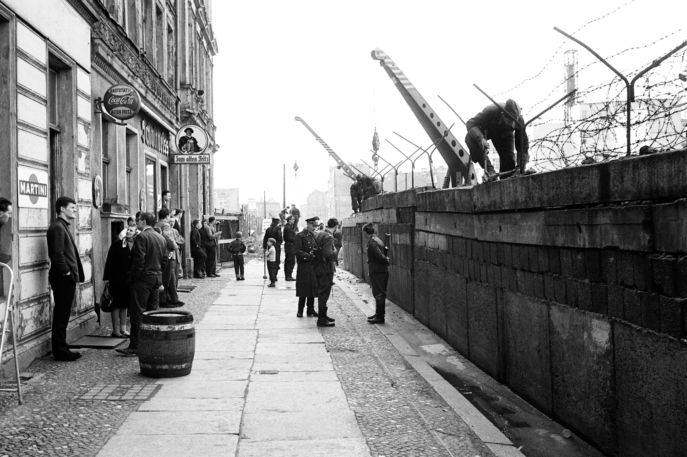

Construirea
De-a lungul timpului, zidul a trecut prin patru faze de construcție:
- Gardul din sârmă ghimpată de bază (1961)
- Gardul din sârmă ghimpată îmbunătățit (1962-1965)
- Zidul din beton (1965-1975)
- Grenzmauer 75 (Zidul de graniță 75) (1975-1989) - s-au adăugat senzori de mișcare, 116 turnuri, garduri de plasă etc.
Efectele ridicării zidului
Numeroase familii au fost despărțite. Mulți est-germani au fost opriți să-și mai desfășoare activitatea în Berlinul Occidental, pierzându-și o valoroasă sursă de venit. Berlinul Occidental a devenit o enclavă aproape total izolată într-un teritoriu ostil.
Zidul a reprezentat un simbol al tiraniei comuniste, insistent afișat în lumea occidentală, în special după împușcarea, intens prezentată de mass media occidentală, a câtorva evadați.